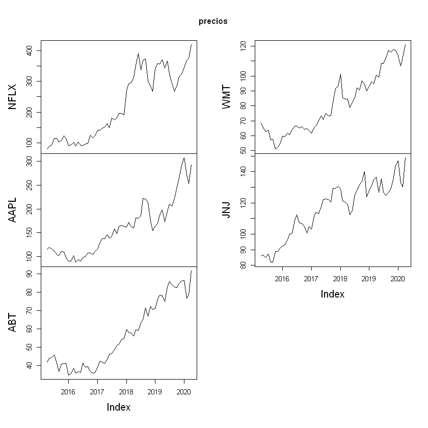
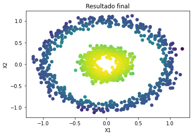

Ejemplo - Frontera eficiente, CAPM e indicadores de desempeño con datos mensuales¶
Descargar por medio de código, precios de Yahoo Finance con una frecuencia mensual de cada una de las acciones, descargar 61 precios (01 de abril de 2015 hasta 30 de abril de 2020). Adicionalmente, descargar el histórico del índice S&P 500 con las mismas fechas de las acciones. El S&P 500 representará el mercado.
Acciones:
NFLX.
AAPL.
ABT.
WMT.
JNJ.
El análisis se realizará el 01 de mayo de 2020. La tasa libre de riesgo del 01 de mayo de 2020 fue de 0,618% nominal anual. Esta tasa nominal se puede convertir a mensual dividiendo por 12 meses. Ver las tasas libres de riesgo de Estados Unidos: aquí
PRIMERA PARTE:
1.1 Anualizar los rendimientos y las volatilidades continuos mensuales de cada acción y el rendimiento esperado continuo mensual del mercado.
Con la librería fPortfolio realizar lo siguiente con los
rendimientos continuos mensuales:
1.2 Graficar la frontera eficiente.
1.3 Graficar las proporciones de inversión de la frontera.
1.4 Hallar el portafolio de mínima varianza.
1.5 Hallar el portafolio tangente a la Línea de Mercado de Capitales (CML).
1.6 Índice de diversificación \((h)\) al portafolio de mínima varianza.
1.7 Índice de diversificación \((h)\) al portafolio tangente a la Línea de Mercado de Capitales (CML).
1.8 Índice de diversificación \((h)\) al portafolio de la Línea de Mercado de Capitales (CML) con un 20% en el activo libre de riesgo y 80% en el portafolio tangente.
SEGUNDA PARTE:
2.1 Calcular el coeficiente Beta de cada una de las acciones con los rendimientos mensuales en forma aritmética (discreta).
2.2 Calcular el coeficiente de correlación que tiene cada acción con el mercado con los rendimientos mensuales en forma aritmética (discreta).
Luego calcular el Beta y el rendimiento esperado anualizado por CAPM de lo siguientes portafolios:
Para el CAPM utilizar las tasas \(R_f\) y \(E[R_m]\) en forma continua.
2.3 Portafolio de mínima varianza.
2.4 Portafolio tangente a la Línea de Mercado de Capitales (CML).
2.5 Portafolio de la Línea de Mercado de Capitales (CML) con un 20% en el activo libre de riesgo y 80% en el portafolio tangente.
TERCERA PARTE:
Calcular los indicadores de desempeño anualizados de los siguientes portafolios con el histórico de precios de cinco años:
3.1 Portafolio de mínima varianza.
3.2 Portafolio tangente a la Línea de Mercado de Capitales (CML).
3.3 Portafolio de la Línea de Mercado de Capitales (CML) con un 20% en el activo libre de riesgo y 80% en el portafolio tangente.
CUARTA PARTE:
Calcular lo indicadores de desempeño anualizados hallados en la tercera parte, pero utilizando el rendimiento CAPM como rendimiento esperado del portafolio: \(E[R_P] = CAPM\).
Importar datos¶
library(quantmod)
library(tseries)
Los precios se descargarán con la función get.hist.quote. Se debe
poner compression = "m" para que descargue la frecuencia mensual
"m".
El histórico de precios mensuales de Yahoo Finance tiene las fechas del primero de cada mes; sin embargo, son los precios del último día de negociación del mes y no es necesario colocar un día de más como se hace cuando se descargan precios diarios.
Para las acciones se descargan los precios de cierre ajustados
quote = "AdjClose" y para el índice, los precios de cierre
quote = "Close".
NFLX = get.hist.quote(instrument = "NFLX", start = as.Date("2015-04-01"), end = as.Date("2020-04-30"), quote = "AdjClose", compression = "m")
AAPL = get.hist.quote(instrument = "AAPL", start = as.Date("2015-04-01"), end = as.Date("2020-04-30"), quote = "AdjClose", compression = "m")
ABT = get.hist.quote(instrument = "ABT", start = as.Date("2015-04-01"), end = as.Date("2020-04-30"), quote = "AdjClose", compression = "m")
WMT = get.hist.quote(instrument = "WMT", start = as.Date("2015-04-01"), end = as.Date("2020-04-30"), quote = "AdjClose", compression = "m")
JNJ = get.hist.quote(instrument = "JNJ", start = as.Date("2015-04-01"), end = as.Date("2020-04-30"), quote = "AdjClose", compression = "m")
SP = get.hist.quote(instrument = "^GSPC", start = as.Date("2015-04-01"), end = as.Date("2020-04-30"), quote = "Close", compression = "m")
time series ends 2020-04-01
time series ends 2020-04-01
time series ends 2020-04-01
time series ends 2020-04-01
time series ends 2020-04-01
time series ends 2020-04-01
precios = merge(NFLX, AAPL, ABT, WMT, JNJ)
head(precios)
tail(precios)
Adjusted.NFLX Adjusted.AAPL Adjusted.ABT Adjusted.WMT Adjusted.JNJ
2015-04-01 79.50000 114.8596 41.72806 68.67964 85.93224
2015-05-01 89.15143 119.5677 43.91123 65.35342 86.74653
2015-06-01 93.84857 115.5974 44.34493 62.80832 85.04062
2015-07-01 114.31000 111.7911 45.79959 63.73811 87.44018
2015-08-01 115.03000 104.0681 41.43597 57.31825 82.00407
2015-09-01 103.26000 102.1136 36.51523 57.80770 82.07746
Adjusted.NFLX Adjusted.AAPL Adjusted.ABT Adjusted.WMT Adjusted.JNJ
2019-11-01 314.66 265.1016 84.73180 117.5190 134.7448
2019-12-01 323.57 292.1638 86.12995 117.2723 143.9479
2020-01-01 345.09 307.9436 86.40759 113.4864 146.9083
2020-02-01 369.03 271.9765 76.70699 106.7361 132.7080
2020-03-01 375.50 253.6035 78.57910 112.6241 130.2273
2020-04-01 419.85 293.0068 91.70383 121.0177 149.0071
Nombres de las acciones¶
nombres = c("NFLX", "AAPL", "ABT", "WMT", "JNJ")
nombres
- 'NFLX'
- 'AAPL'
- 'ABT'
- 'WMT'
- 'JNJ'
colnames(precios) = nombres # Se renombran las columnas
plot(precios)

Matriz de rendimientos continuos mensuales¶
rendimientos = diff(log(precios))
rendimientos_mercado = diff(log(SP))
Número de rendimientos¶
numero_rendimientos = nrow(rendimientos)
numero_rendimientos
Rendimientos esperado de cada acción continuos mensuales¶
rendimientos_esperados = apply(rendimientos, 2, mean)
print(rendimientos_esperados)
NFLX AAPL ABT WMT JNJ
0.027735675 0.015608097 0.013123173 0.009441396 0.009173911
Rendimiento esperado continuo mensual del mercado¶
rendimiento_esperado_mercado = mean(rendimientos_mercado)
rendimiento_esperado_mercado
Volatilidad de cada acción mensual¶
volatilidades = apply(rendimientos, 2, sd)
print(volatilidades)
NFLX AAPL ABT WMT JNJ
0.10660795 0.07957989 0.06137850 0.05348962 0.04621298
plot(volatilidades, rendimientos_esperados, pch = 19, cex = 2, xlab = "Volatilidad", ylab = "Rendimiento", col = c(1:5))
legend("topleft", colnames(precios), pch = 19, bty = "n", cex = 1.5, col = c(1:5))

Matriz de coeficientes de correlación¶
correlacion = cor(rendimientos)
print(correlacion)
NFLX AAPL ABT WMT JNJ
NFLX 1.000000000 0.3482053 0.3191328 -0.01883287 0.009469283
AAPL 0.348205264 1.0000000 0.4700833 0.16884411 0.384932720
ABT 0.319132848 0.4700833 1.0000000 0.11725941 0.492859761
WMT -0.018832869 0.1688441 0.1172594 1.00000000 0.417730489
JNJ 0.009469283 0.3849327 0.4928598 0.41773049 1.000000000
Matriz de covarianzas¶
covarianzas = cov(rendimientos)
print(covarianzas)
NFLX AAPL ABT WMT JNJ
NFLX 1.136526e-02 0.0029541211 0.0020882254 -0.0001073929 4.665204e-05
AAPL 2.954121e-03 0.0063329596 0.0022961195 0.0007187184 1.415638e-03
ABT 2.088225e-03 0.0022961195 0.0037673203 0.0003849758 1.397988e-03
WMT -1.073929e-04 0.0007187184 0.0003849758 0.0028611390 1.032594e-03
JNJ 4.665204e-05 0.0014156377 0.0013979884 0.0010325940 2.135639e-03
PRIMERA PARTE¶
1.1 Rendimientos esperados de cada acción anualizados¶
rendimientos_esperados_anual = rendimientos_esperados*12
print(rendimientos_esperados_anual)
NFLX AAPL ABT WMT JNJ
0.3328281 0.1872972 0.1574781 0.1132967 0.1100869
1.1 Volatiliades de cada acción anualizadas¶
volatilidades_anual = volatilidades*sqrt(12)
print(volatilidades_anual)
NFLX AAPL ABT WMT JNJ
0.3693008 0.2756728 0.2126214 0.1852935 0.1600864
1.1 Rendimiento esperado del mercado anualizado¶
rendimiento_esperado_mercado_anual = rendimiento_esperado_mercado*12
rendimiento_esperado_mercado_anual
Frontera eficiente de Markowitz con rendimientos continuos mensuales¶
library(fPortfolio)
frontera = portfolioFrontier(as.timeSeries(rendimientos), constraints = "longOnly")
1.2 Gráfico de la frontera eficiente¶
frontierPlot(frontera, cex = 2, pch = 19)
monteCarloPoints(frontera, col = "blue", mcSteps = 500, cex = 0.5, pch = 19)
minvariancePoints(frontera, col = "darkred", pch = 19, cex = 2)
equalWeightsPoints(frontera, col = "darkgreen", pch = 19, cex = 2)


{kind=link}
{kind=link}
1.4 Portafolio de mínima varianza¶
minima_varianza = minvariancePortfolio(as.timeSeries(rendimientos), constraints = "LongOnly")
minima_varianza
Title:
MV Minimum Variance Portfolio
Estimator: covEstimator
Solver: solveRquadprog
Optimize: minRisk
Constraints: LongOnly
Portfolio Weights:
NFLX AAPL ABT WMT JNJ
0.1039 0.0000 0.1346 0.3385 0.4229
Covariance Risk Budgets:
NFLX AAPL ABT WMT JNJ
0.1039 0.0000 0.1346 0.3385 0.4229
Target Returns and Risks:
mean Cov CVaR VaR
0.0117 0.0380 0.0777 0.0759
Description:
Mon Jun 01 22:02:13 2020 by user: migue
1.4 Proporciones portafolio de mínima varianza¶
En el portafolio de mínima varianza no se tiene en cuenta la acción AAPL.
portafolio_minima_varianza = c(0.1039, 0, 0.1346, 0.3385, 0.4229)
1.4 Rendimiento esperado mensual portafolio de mínima varianza¶
rendimiento_minima_varianza = sum(portafolio_minima_varianza*rendimientos_esperados)
rendimiento_minima_varianza
1.4 Volatilidad mensual portafolio de mínima varianza¶
volatilidad_minima_varianza = sqrt(sum(portafolio_minima_varianza%*%covarianzas*t(portafolio_minima_varianza)))
volatilidad_minima_varianza
Activo libre de riesgo¶
Tasa libre de riesgo a 10 años de los bonos del Tesoro de Estados Unidos.
Tasa nominal de 0,618% para el 01 de mayo de 2020.
Se debe covertir a continua con \(log(1 + tasa)\) y después a mensual.
Rf = 0.00618 #Anual.
Rf = log(1 + Rf) #Continua anual
Rf_mensual = log(1 + Rf/12) #Continua mensual
Rf_mensual
Se agrega en las especificaciones la tasa libre de riesgo continua mensual.
especificaciones = portfolioSpec()
`setRiskFreeRate<-`(especificaciones, Rf_mensual)
Model List:
Type: MV
Optimize: minRisk
Estimator: covEstimator
Params: alpha = 0.05
Portfolio List:
Target Weights: NULL
Target Return: NULL
Target Risk: NULL
Risk-Free Rate: 0.000513283423645149
Number of Frontier Points: 50
Optim List:
Solver: solveRquadprog
Objective: portfolioObjective portfolioReturn portfolioRisk
Options: meq = 2
Trace: FALSE
Gráfico de la frontera eficiente con Línea de Mercado de Capitales (CML).¶
frontierPlot(frontera, cex = 2, pch = 19)
monteCarloPoints(frontera, col = "blue", mcSteps = 500, cex = 0.5, pch = 19)
minvariancePoints(frontera, col = "darkred", pch = 19, cex = 2)
equalWeightsPoints(frontera, col = "darkgreen", pch = 19, cex = 2)
tangencyLines(frontera)
tangencyPoints(frontera, col = "green", cex = 2, pch = 19)

1.5 Portafolio tangente¶
portafolio_tangente = tangencyPortfolio(as.timeSeries(rendimientos), spec = especificaciones, constraints = "LongOnly")
portafolio_tangente
Title:
MV Tangency Portfolio
Estimator: covEstimator
Solver: solveRquadprog
Optimize: minRisk
Constraints: LongOnly
Portfolio Weights:
NFLX AAPL ABT WMT JNJ
0.2698 0.0382 0.1245 0.2911 0.2764
Covariance Risk Budgets:
NFLX AAPL ABT WMT JNJ
0.4990 0.0397 0.1090 0.1832 0.1691
Target Returns and Risks:
mean Cov CVaR VaR
0.0150 0.0430 0.0636 0.0552
Description:
Mon Jun 01 22:02:43 2020 by user: migue
1.5 Proporciones portafolio tangente¶
portafolio_tangente = c(0.2698, 0.0382, 0.1245, 0.2911, 0.2764)
1.5 Rendimiento esperado mensual portafolio tangente¶
rendimiento_tangente = sum(portafolio_tangente*rendimientos_esperados)
rendimiento_tangente
1.5 Volatilidad mensual portafolio tangente¶
volatilidad_tangente = sqrt(sum(portafolio_tangente%*%covarianzas*t(portafolio_tangente)))
volatilidad_tangente
1.6 Indicador de diversificación portafolio de mínima varianza¶
En el portafolio de mínima varianza no se tiene en cuenta la segunda acción que es AAPL. Solo se suman las volatilidades de la primera acción y de la tercera a la quinta.
h_minima_varianza = 1 - volatilidad_minima_varianza/sum(volatilidades[1]+volatilidades[3:5])
h_minima_varianza
1.7 Indicador de diversificación portafolio tangente¶
En el portafolio tangente tiene participación todas las acciones.
h_tangente = 1 - volatilidad_tangente/sum(volatilidades)
h_tangente
Portafolio 20% en el activo libre de riesgo y 80% en el portafolio tangente¶
proporciones_CML = c(0.20, 0.80)
Rendimiento esperado mensual portafolio 20% en el activo libre de riesgo y 80% en el portafolio tangente¶
rendimiento_CML = sum(proporciones_CML*c(Rf_mensual, rendimiento_tangente))
rendimiento_CML
Volatilidad mensual portafolio 20% en el activo libre de riesgo y 80% en el portafolio tangente¶
El activo libre de riesgo tiene una volatilidad de cero, por tanto, la volatilidad del portafolio es igual a la proporción invertida en el portafolio tangente, 80%, por la volatilidad del portafolio tangente.
volatilidad_CML = proporciones_CML[2]*volatilidad_tangente
volatilidad_CML
1.8 Indicador de diversificación portafolio 20% en el activo libre de riesgo y 80% en el portafolio tangente¶
h_CML = 1 - volatilidad_CML/sum(volatilidades)
h_CML
SEGUNDA PARTE¶
Para calcular los coeficientes Betas se deben hallar los rendimientos en forma artimética (discreta).
El nombre de los siguientes objetos terminará en _2 para no
sobrescribir los valores anteriormente calculados.
Rendimientos de la acción y del mercado en forma aritmética (discreta)¶
rendimientos_2 = diff(precios)/precios[-numero_rendimientos,]
rendimientos_mercado_2 = diff(SP)/SP[-numero_rendimientos]
colnames(rendimientos_2) = nombres # Se renombran las columnas
head(rendimientos_2)
tail(rendimientos_2)
NFLX AAPL ABT WMT JNJ
2015-05-01 0.108258816 0.03937670 0.049717808 -0.05089598 0.0093870384
2015-06-01 0.050050245 -0.03434644 0.009780171 -0.04052159 -0.0200599434
2015-07-01 0.178999443 -0.03404789 0.031761547 0.01458766 0.0274422932
2015-08-01 0.006259245 -0.07421170 -0.105309966 -0.11200376 -0.0662907617
2015-09-01 -0.113984087 -0.01914043 -0.134758737 0.00846683 0.0008942163
2015-10-01 0.047241144 0.07698747 0.102231968 -0.13277413 0.0760170799
NFLX AAPL ABT WMT JNJ
2019-10-01 0.06885637 0.09965430 -0.0007175189 -0.012109775 0.02014535
2019-11-01 0.08660141 0.06918620 0.0254400131 0.015366495 0.03963940
2019-12-01 0.02753655 0.09262699 0.0162330871 -0.002103754 0.06393363
2020-01-01 0.06236051 0.05124245 0.0032131667 -0.033359432 0.02015178
2020-02-01 0.06487278 -0.13224329 -0.1264631637 -0.063242924 -0.10700472
2020-04-01 0.10563298 0.13447924 0.1431207991 0.069358533 0.12603296
head(rendimientos_mercado_2)
tail(rendimientos_mercado_2)
Close
2015-05-01 0.01038246
2015-06-01 -0.02146264
2015-07-01 0.01935983
2015-08-01 -0.06675863
2015-09-01 -0.02716105
2015-10-01 0.07662457
Close
2019-10-01 0.020022672
2019-11-01 0.032926005
2019-12-01 0.027795160
2020-01-01 -0.001630748
2020-02-01 -0.091834749
2020-04-01 0.112565745
2.1 Beta de cada acción¶
regresion = lm(rendimientos_2 ~ rendimientos_mercado_2)
beta = regresion$coefficients[2,]
print(beta)
NFLX AAPL ABT WMT JNJ
1.1028404 1.2488198 1.1470148 0.4386940 0.8171155
2.2 Correlación de cada acción con el mercado¶
cor(rendimientos_2, rendimientos_mercado_2)
| Close | |
|---|---|
| NFLX | 0.4101695 |
| AAPL | 0.6093306 |
| ABT | 0.7201432 |
| WMT | 0.3153198 |
| JNJ | 0.6864567 |
2.4 Beta portafolio de mínima varianza¶
beta_minima_varianza = sum(portafolio_minima_varianza*beta)
beta_minima_varianza
2.4 CAPM anualizado portafolio de mínima varianza¶
CAPM_minima_varianza = Rf + beta_minima_varianza*(rendimiento_esperado_mercado_anual - Rf)
CAPM_minima_varianza
2.5 Beta portafolio tangente¶
beta_tangente = sum(portafolio_tangente*beta)
beta_tangente
2.5 CAPM anualizado portafolio tangente¶
CAPM_tangente = Rf + beta_tangente*(rendimiento_esperado_mercado_anual - Rf)
CAPM_tangente
2.6 Beta portafolio 20% en el activo libre de riesgo y 80% en el portafolio tangente¶
Los activos libres de riesgo tienen coeficiente Beta igual a cero.
beta_CML = proporciones_CML[2]*beta_tangente
beta_CML
2.6 CAPM anualizado portafolio 20% en el activo libre de riesgo y 80% en el portafolio tangente¶
CAPM_CML = Rf + beta_CML*(rendimiento_esperado_mercado_anual - Rf)
CAPM_CML
TERCERA PARTE¶
3.1 Indicadores de desempeño anualizado portafolio de mínima varianza¶
* Ratio de Sharpe:
sharpe_minima_varianza = (rendimiento_minima_varianza*12 - Rf)/(volatilidad_minima_varianza*sqrt(12))
sharpe_minima_varianza
* Ratio de Treynor:
treynor_minima_varianza = (rendimiento_minima_varianza*12 - Rf)/beta_minima_varianza
treynor_minima_varianza
* Alfa de Jensen:
jensen_minima_varianza = (rendimiento_minima_varianza*12 - Rf) - (rendimiento_esperado_mercado_anual - Rf)*beta_minima_varianza
jensen_minima_varianza
3.2 Indicadores de desempeño portafolio tangente¶
* Ratio de Sharpe:
sharpe_tangente = (rendimiento_tangente*12 - Rf)/(volatilidad_tangente*sqrt(12))
sharpe_tangente
* Ratio de Treynor:
treynor_tangente = (rendimiento_tangente*12 - Rf)/beta_tangente
treynor_tangente
* Alfa de Jensen:
jensen_tangente = (rendimiento_tangente*12 - Rf) - (rendimiento_esperado_mercado_anual - Rf)*beta_tangente
jensen_tangente
3.3 Indicadores de desempeño portafolio 20% en el activo libre de riesgo y 80% en el portafolio tangente¶
* Ratio de Sharpe:
sharpe_CML = (rendimiento_CML*12 - Rf)/(volatilidad_CML*sqrt(12))
sharpe_CML
* Ratio de Treynor:
treynor_CML = (rendimiento_CML*12 - Rf)/beta_CML
treynor_CML
* Alfa de Jensen:
jensen_CML = (rendimiento_CML*12 - Rf) - (rendimiento_esperado_mercado_anual - Rf)*beta_CML
jensen_CML
CUARTA PARTE¶
Indicadores de desempeño anualizado portafolio de mínima varianza con CAPM¶
* Ratio de Sharpe:
sharpe_minima_varianza_CAPM = (CAPM_minima_varianza - Rf)/(volatilidad_minima_varianza*sqrt(12))
sharpe_minima_varianza_CAPM
* Ratio de Treynor:
treynor_minima_varianza_CAPM = (CAPM_minima_varianza - Rf)/beta_minima_varianza
treynor_minima_varianza_CAPM
* Alfa de Jensen:
jensen_minima_varianza_CAPM = (CAPM_minima_varianza - Rf) - (rendimiento_esperado_mercado_anual - Rf)*beta_minima_varianza
jensen_minima_varianza_CAPM
Si se utiliza el CAPM como rendimiento del portafolio, el alfa de Jensen siempre es cero porque este indicador mide el exceso de rendimiento que entrega el portafolio por encima del riesgo en función del riesgo sistemático \(\beta\).
Indicadores de desempeño portafolio tangente con CAPM¶
* Ratio de Sharpe:
sharpe_tangente_CAPM = (CAPM_tangente - Rf)/(volatilidad_tangente*sqrt(12))
sharpe_tangente_CAPM
* Ratio de Treynor:
treynor_tangente_CAPM = (CAPM_tangente - Rf)/beta_tangente
treynor_tangente_CAPM
* Alfa de Jensen:
jensen_tangente_CAPM = (CAPM_tangente - Rf) - (rendimiento_esperado_mercado_anual - Rf)*beta_tangente
jensen_tangente_CAPM
Indicadores de desempeño portafolio 20% en el activo libre de riesgo y 80% en el portafolio tangente con CAPM¶
* Ratio de Sharpe:
sharpe_CML_CAPM = (CAPM_CML - Rf)/(volatilidad_CML*sqrt(12))
sharpe_CML_CAPM
* Ratio de Treynor:
treynor_CML_CAPM = (CAPM_CML - Rf)/beta_CML
treynor_CML_CAPM
* Alfa de Jensen:
jensen_CML_CAPM = (CAPM_CML - Rf) - (rendimiento_esperado_mercado_anual - Rf)*beta_CML
jensen_CML_CAPM